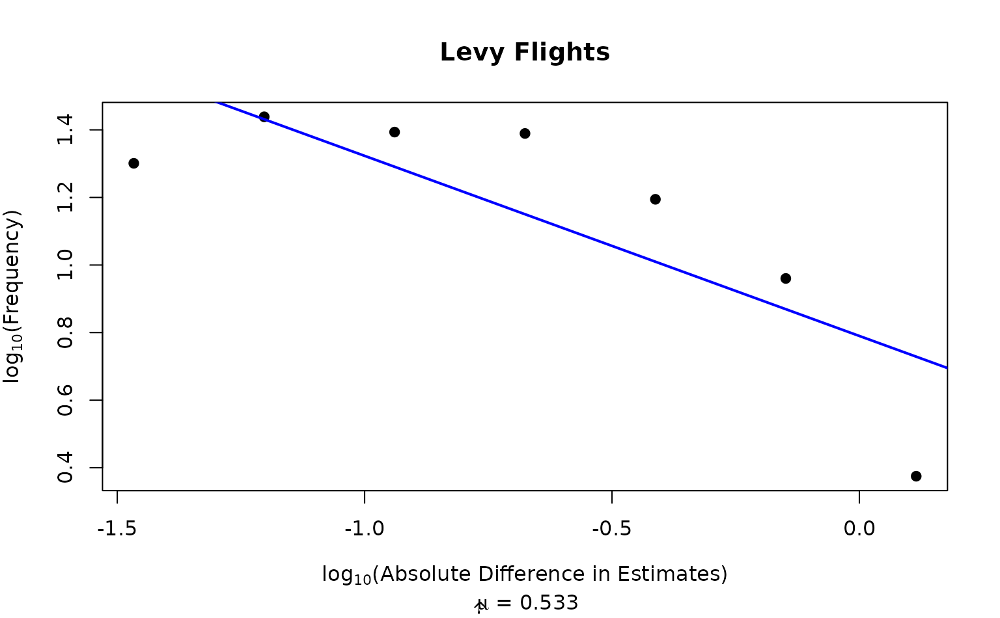

This function analyses if the length of the jumps the sampler is making (\(l\)) belongs to a Levy probability density distribution, \(P(l) \approx l^{-\mu}\).
calc_levy(chain, plot = FALSE)Matrix of n x d dimensions, n = iterations, d = dimensions.
Boolean. plot Boolean. Whether to also plot the distance-frequency relationship.
If plot is true, it returns a simple plot with the log absolute difference in estimates and their frequency, as well as an estimate for the \(\mu\) parameter. If false it returns a list with what's required to make the plot.
Values of \(\mu \approx 2\) have been used to describe foraging in animals, and produce the most effective foraging (Viswanathan et al. 1999) . See Zhu et al. (2018) for a comparison of Levy Flight and PSD measures for different samplers in multimodal representations.
Viswanathan GM, Buldyrev SV, Havlin S, Da Luz MGE, Raposo EP, Stanley HE (1999).
“Optimizing the Success of Random Searches.”
Nature, 401(6756), 911--914.
doi:10.1038/44831
.
Zhu J, Sanborn AN, Chater N (2018).
“Mental Sampling in Multimodal Representations.”
Advances in Neural Information Processing Systems, 31, 5748--5759.
set.seed(1)
chain1 <- sampler_mh(1, "norm", c(0,1), diag(1))
calc_levy(chain1[[1]], plot=TRUE)

#> $fx
#> [1] -1.4665954 -1.2030099 -0.9394245 -0.6758391 -0.4122536 -0.1486682 0.1149172
#>
#> $fy
#> [1] 1.3010300 1.4386857 1.3934422 1.3893627 1.1945068 0.9602310 0.3749153
#>
#> $slope
#> [1] 1.5718308 1.4313240 1.2908173 1.1503105 1.0098038 0.8692970 0.7287903
#>
#> $coef
#> [1] -0.5330596 0.7900480
#>